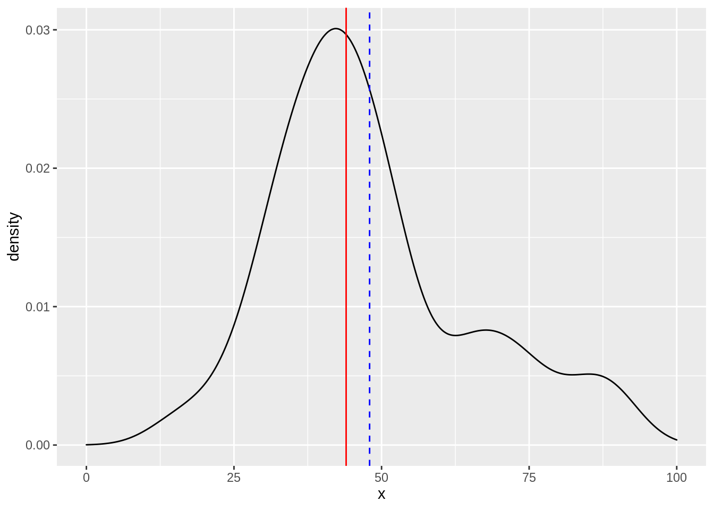

library(ggplot2)
# クラス中の40人のテストの点数
x [1] 16 24 27 31 32 32 33 33 36 36 37 38 39 40 40 42 43 43 43 44 44 45 46 46 48
[26] 50 50 52 52 53 54 65 62 66 70 75 73 82 88 89mean(x) # クラスの平均点[1] 47.975median(x) # クラスの点数の中央値[1] 44p <-
tibble::tibble(x = x) |>
ggplot(aes(x)) +
geom_density() +
xlim(0, 100)
p +
geom_vline(xintercept = median(x), color = "red") +
geom_vline(xintercept = mean(x), color = "blue", linetype = "dashed")